Myth or fact: Simmer wine in a sauce for an hour and the alcohol is gone. / Setting the pan on fire burns off all the alcohol. / Buckwheat is a kind of wheat. · made 2026-10-27T04:46:12.664Z · run cost $0.000
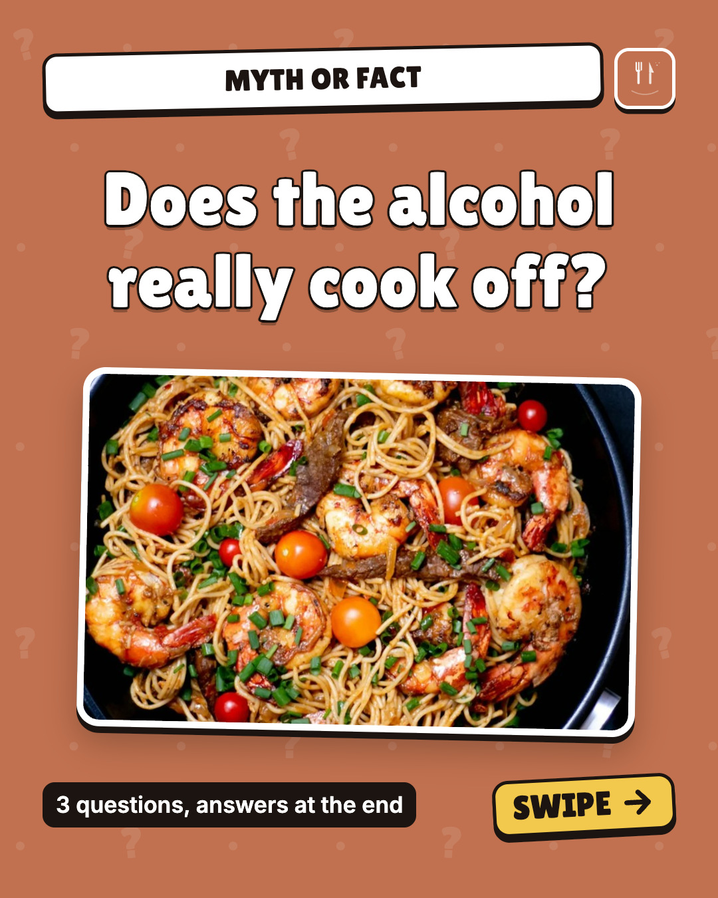
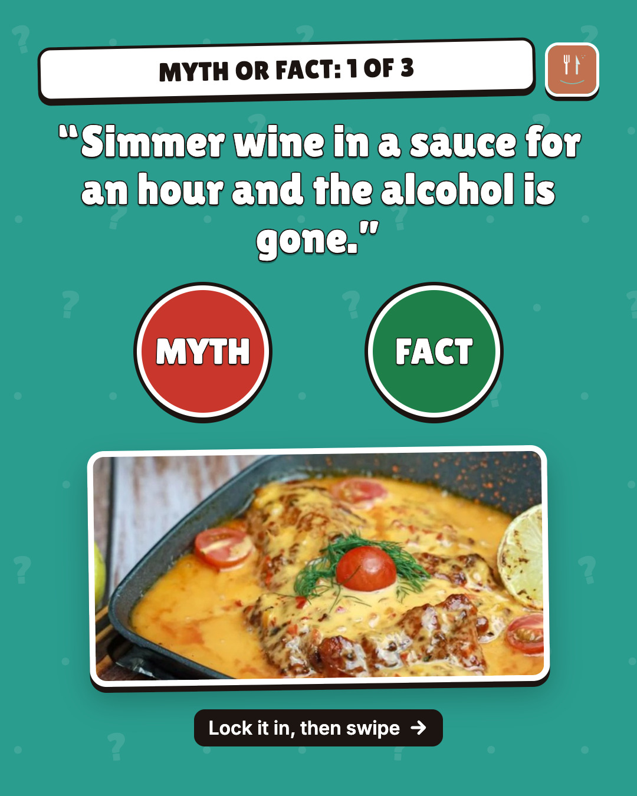
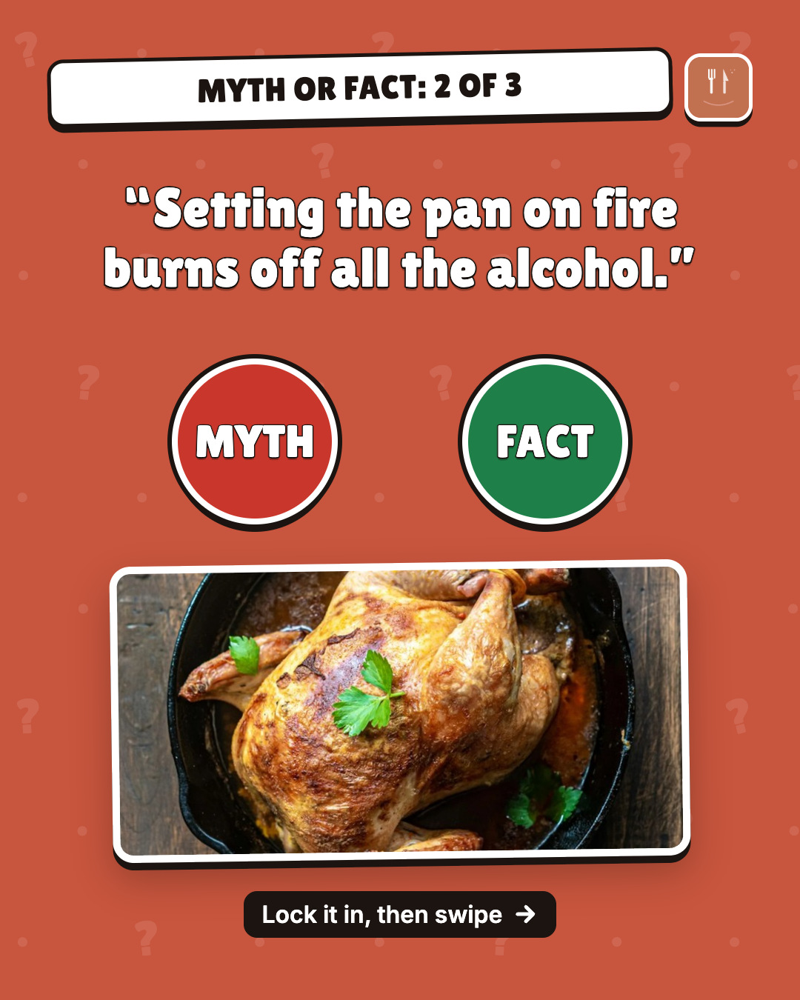
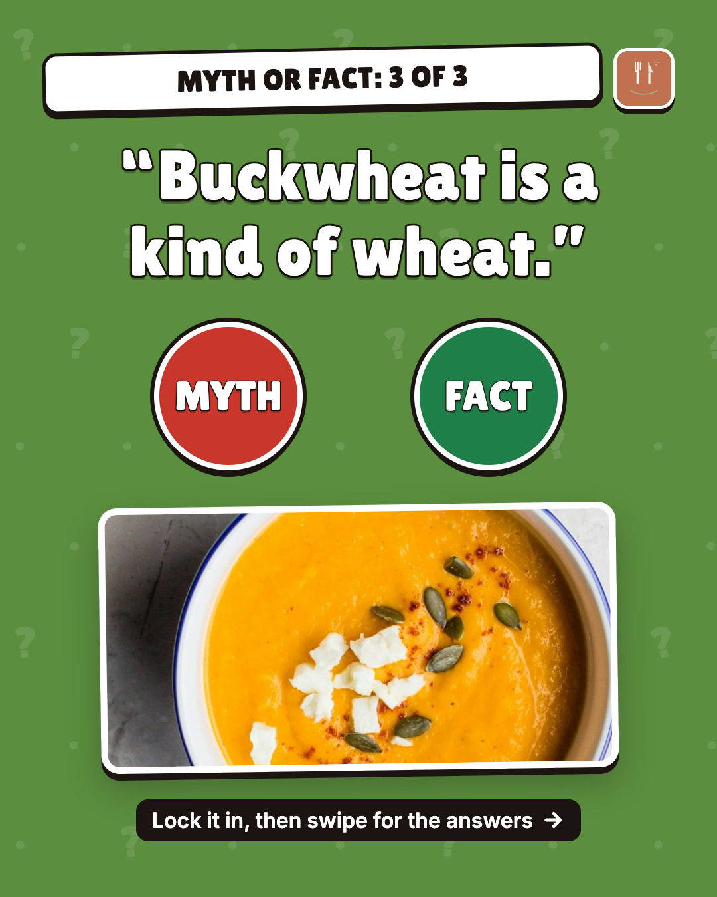
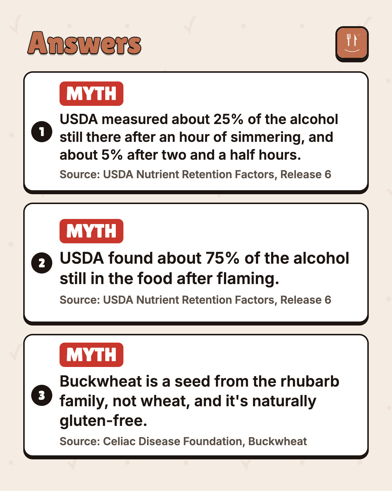
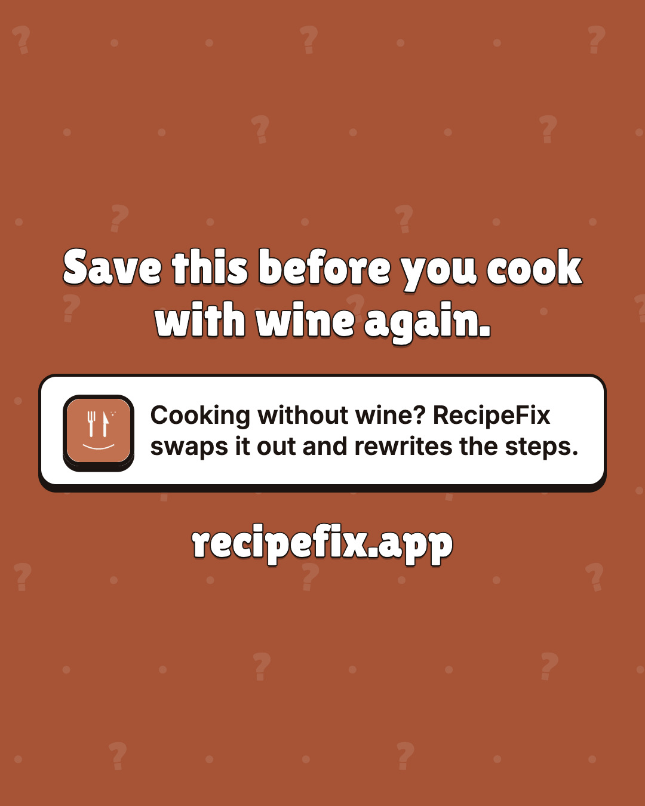
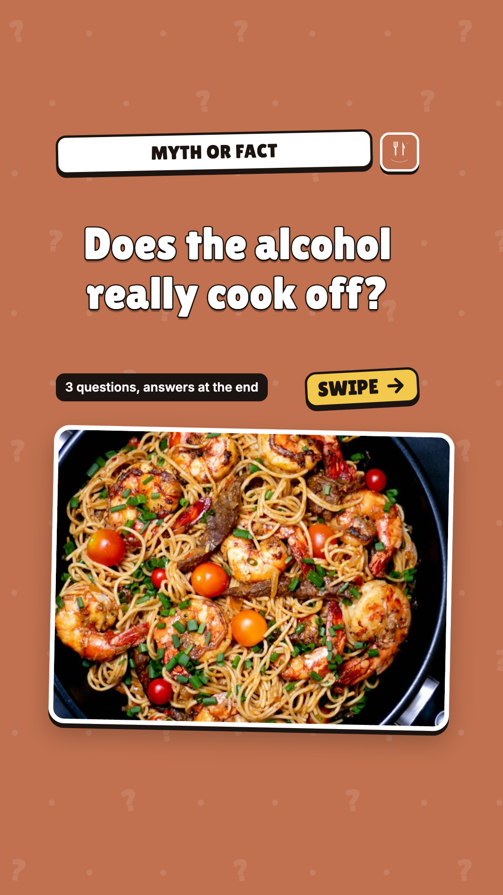
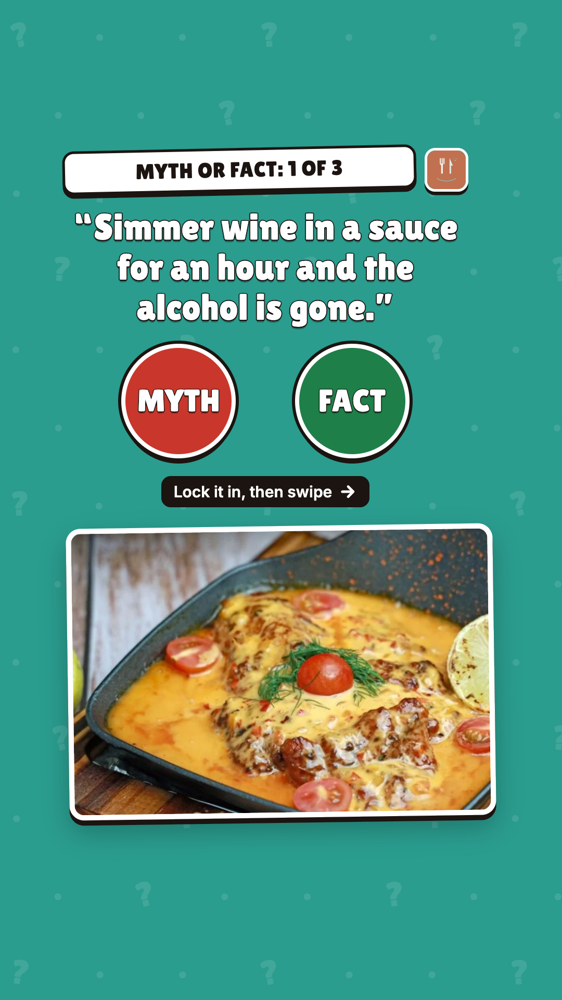
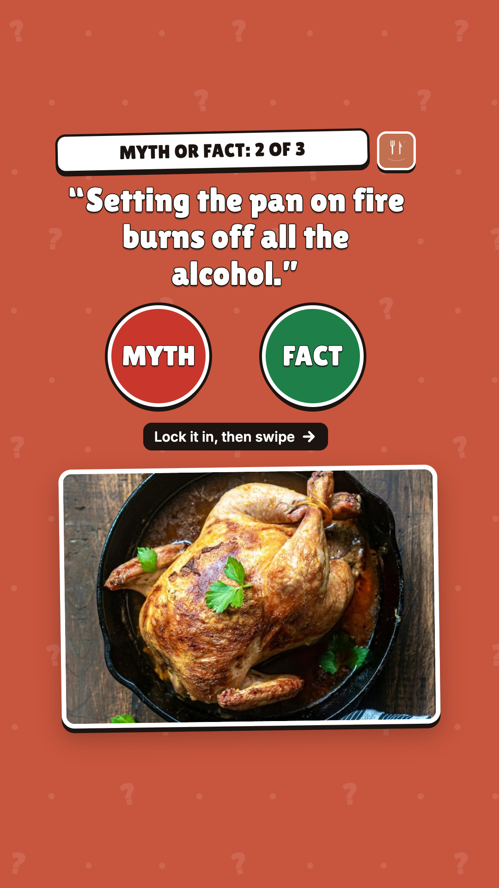
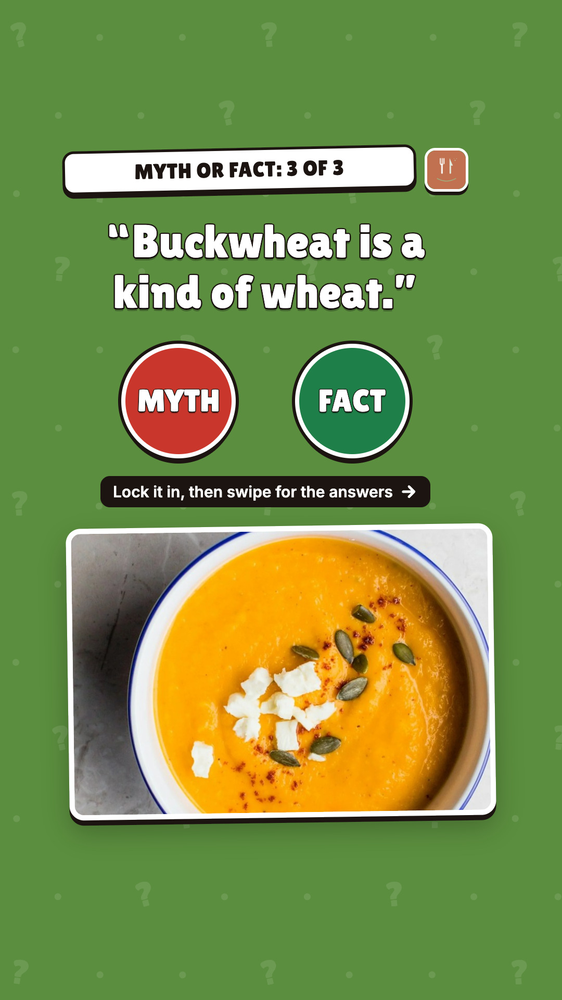
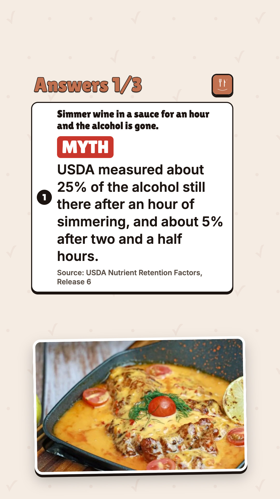
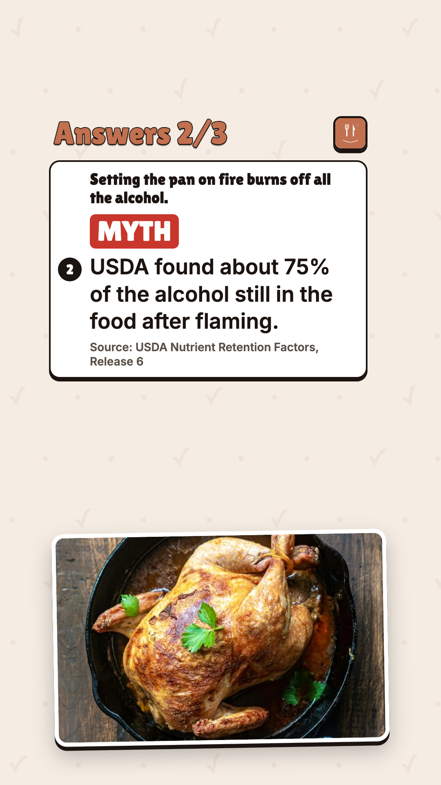
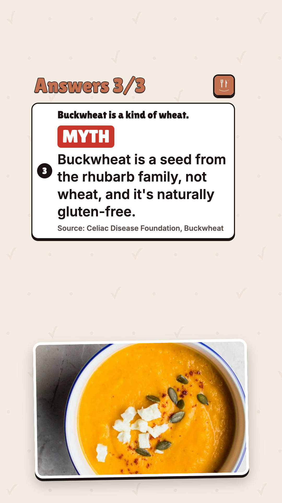
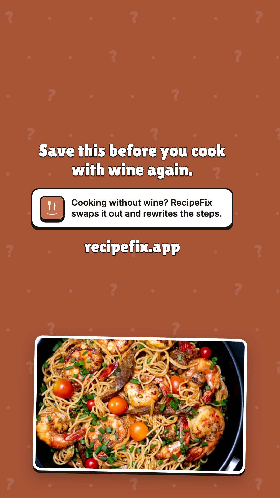
3 kitchen myths. Call each one myth or fact before you swipe. The answers come from USDA and the Celiac Disease Foundation. Cooking without wine? RecipeFix swaps it out and rewrites the steps. #kitchenmyths #cookingtips #foodscience #recipefix
media: runs/2026-10-27/slides-quiz-kitchen-myths/slides/ig-01-cover.jpg, runs/2026-10-27/slides-quiz-kitchen-myths/slides/ig-02-q1.jpg, runs/2026-10-27/slides-quiz-kitchen-myths/slides/ig-03-q2.jpg, runs/2026-10-27/slides-quiz-kitchen-myths/slides/ig-04-q3.jpg, runs/2026-10-27/slides-quiz-kitchen-myths/slides/ig-05-answers.jpg, runs/2026-10-27/slides-quiz-kitchen-myths/slides/ig-06-close.jpg
3 kitchen myths. Call each one myth or fact before you swipe. The answers come from USDA and the Celiac Disease Foundation. #kitchenmyths #cookingtips #foodscience #foodtok #recipefix
media: runs/2026-10-27/slides-quiz-kitchen-myths/slides/tiktok-01-cover.jpg, runs/2026-10-27/slides-quiz-kitchen-myths/slides/tiktok-02-q1.jpg, runs/2026-10-27/slides-quiz-kitchen-myths/slides/tiktok-03-q2.jpg, runs/2026-10-27/slides-quiz-kitchen-myths/slides/tiktok-04-q3.jpg, runs/2026-10-27/slides-quiz-kitchen-myths/slides/tiktok-05-answers1.jpg, runs/2026-10-27/slides-quiz-kitchen-myths/slides/tiktok-06-answers2.jpg, runs/2026-10-27/slides-quiz-kitchen-myths/slides/tiktok-07-answers3.jpg, runs/2026-10-27/slides-quiz-kitchen-myths/slides/tiktok-08-close.jpg · title: Myth or fact: 3 kitchen myths, answers at the end
Does the alcohol really cook off? 3 questions. Answers in the reply, no peeking. #kitchenmyths #cookingtips #recipefix
thread:
1. Answer: Myth USDA measured about 25% of the alcohol still there after an hour of simmering, and about 5% after two and a half hours. Source: USDA Nutrient Retention Factors, Release 6
2. Answer: Myth USDA found about 75% of the alcohol still in the food after flaming. Source: USDA Nutrient Retention Factors, Release 6
3. Answer: Myth Buckwheat is a seed from the rhubarb family, not wheat, and it's naturally gluten-free. Source: Celiac Disease Foundation, Buckwheat
Cooking without wine? RecipeFix swaps it out and rewrites the steps.
media: runs/2026-10-27/slides-quiz-kitchen-myths/slides/ig-02-q1.jpg, runs/2026-10-27/slides-quiz-kitchen-myths/slides/ig-03-q2.jpg, runs/2026-10-27/slides-quiz-kitchen-myths/slides/ig-04-q3.jpg
Does the alcohol really cook off? 3 questions. Answers in the reply, no peeking. #kitchenmyths #cookingtips #recipefix
thread:
1. Answer: Myth USDA measured about 25% of the alcohol still there after an hour of simmering, and about 5% after two and a half hours. Source: USDA Nutrient Retention Factors, Release 6
2. Answer: Myth USDA found about 75% of the alcohol still in the food after flaming. Source: USDA Nutrient Retention Factors, Release 6
3. Answer: Myth Buckwheat is a seed from the rhubarb family, not wheat, and it's naturally gluten-free. Source: Celiac Disease Foundation, Buckwheat
Cooking without wine? RecipeFix swaps it out and rewrites the steps.
media: runs/2026-10-27/slides-quiz-kitchen-myths/slides/ig-02-q1.jpg, runs/2026-10-27/slides-quiz-kitchen-myths/slides/ig-03-q2.jpg, runs/2026-10-27/slides-quiz-kitchen-myths/slides/ig-04-q3.jpg
ALC BEV,STIRRED,BKD/SIMMRD 1 HR … 25; ALC BEV,STIRRED,BKD/SIMMRD 2.5 HR … 5
ALC BEV,FLAMED … 75
buckwheat isn't related to wheat at all, it's a seed from a flowering plant in the same family as rhubarb
| PASS | ig-1:file | jpeg 1080×1350 |
| PASS | ig-1-cover:still.canvas | 1080×1350 |
| PASS | ig-1-cover:still.text_readback | 4 lines held to read-back, min similarity 1.00; 0 single-glyph lines checked by eye only (OCR vision: 17 words, file: 32 words, inverted: 38 words, rules removed: 36 words, white-text mask: 13 words, dark-text mask: 54 words) |
| PASS | ig-1-cover:still.no_artefacts | no [object Object] / undefined / NaN / braces read on the image |
| PASS | ig-1-cover:still.safe_zone | 14 word boxes inside x 60–1020, y 60–1290 |
| PASS | ig-1-cover:still.text_overlap | no two intended lines overprint each other |
| PASS | ig-1-cover:still.text_size | every line's median OCR word height ≥ 22px |
| PASS | ig-1-cover:still.contrast | min 11.63:1 over 14 word boxes (WCAG AA 4.5:1) |
| PASS | ig-2:file | jpeg 1080×1350 |
| PASS | ig-2-q1:still.canvas | 1080×1350 |
| PASS | ig-2-q1:still.text_readback | 5 lines held to read-back, min similarity 1.00; 0 single-glyph lines checked by eye only (OCR vision: 26 words, file: 19 words, inverted: 36 words, rules removed: 31 words, white-text mask: 21 words, dark-text mask: 25 words) |
| PASS | ig-2-q1:still.no_artefacts | no [object Object] / undefined / NaN / braces read on the image |
| PASS | ig-2-q1:still.safe_zone | 18 word boxes inside x 60–1020, y 60–1290 |
| PASS | ig-2-q1:still.text_overlap | no two intended lines overprint each other |
| PASS | ig-2-q1:still.text_size | every line's median OCR word height ≥ 22px |
| PASS | ig-2-q1:still.contrast | min 6.59:1 over 18 word boxes (WCAG AA 4.5:1) |
| PASS | ig-3:file | jpeg 1080×1350 |
| PASS | ig-3-q2:still.canvas | 1080×1350 |
| PASS | ig-3-q2:still.text_readback | 5 lines held to read-back, min similarity 1.00; 0 single-glyph lines checked by eye only (OCR vision: 24 words, file: 18 words, inverted: 26 words, rules removed: 21 words, white-text mask: 18 words, dark-text mask: 10 words) |
| PASS | ig-3-q2:still.no_artefacts | no [object Object] / undefined / NaN / braces read on the image |
| PASS | ig-3-q2:still.safe_zone | 18 word boxes inside x 60–1020, y 60–1290 |
| PASS | ig-3-q2:still.text_overlap | no two intended lines overprint each other |
| PASS | ig-3-q2:still.text_size | every line's median OCR word height ≥ 22px |
| PASS | ig-3-q2:still.contrast | min 8.74:1 over 18 word boxes (WCAG AA 4.5:1) |
| PASS | ig-4:file | jpeg 1080×1350 |
| PASS | ig-4-q3:still.canvas | 1080×1350 |
| PASS | ig-4-q3:still.text_readback | 5 lines held to read-back, min similarity 1.00; 0 single-glyph lines checked by eye only (OCR vision: 23 words, file: 18 words, inverted: 22 words, rules removed: 17 words, white-text mask: 16 words, dark-text mask: 5 words) |
| PASS | ig-4-q3:still.no_artefacts | no [object Object] / undefined / NaN / braces read on the image |
| PASS | ig-4-q3:still.safe_zone | 15 word boxes inside x 60–1020, y 60–1290 |
| PASS | ig-4-q3:still.text_overlap | no two intended lines overprint each other |
| PASS | ig-4-q3:still.text_size | every line's median OCR word height ≥ 22px |
| PASS | ig-4-q3:still.contrast | min 11.62:1 over 15 word boxes (WCAG AA 4.5:1) |
| PASS | ig-5:file | jpeg 1080×1350 |
| PASS | ig-5-answers:still.canvas | 1080×1350 |
| PASS | ig-5-answers:still.text_readback | 10 lines held to read-back, min similarity 1.00; 0 single-glyph lines checked by eye only (OCR vision: 73 words, file: 80 words, inverted: 79 words, rules removed: 80 words, white-text mask: 78 words, dark-text mask: 79 words) |
| PASS | ig-5-answers:still.no_artefacts | no [object Object] / undefined / NaN / braces read on the image |
| PASS | ig-5-answers:still.safe_zone | 68 word boxes inside x 60–1020, y 60–1290 |
| PASS | ig-5-answers:still.text_overlap | no two intended lines overprint each other |
| PASS | ig-5-answers:still.text_size | every line's median OCR word height ≥ 22px |
| PASS | ig-5-answers:still.contrast | min 5.23:1 over 68 word boxes (WCAG AA 4.5:1) |
| PASS | ig-6:file | jpeg 1080×1350 |
| PASS | ig-6-close:still.canvas | 1080×1350 |
| PASS | ig-6-close:still.text_readback | 3 lines held to read-back, min similarity 1.00; 0 single-glyph lines checked by eye only (OCR vision: 20 words, file: 21 words, inverted: 21 words, rules removed: 21 words, white-text mask: 23 words, dark-text mask: 20 words) |
| PASS | ig-6-close:still.no_artefacts | no [object Object] / undefined / NaN / braces read on the image |
| PASS | ig-6-close:still.safe_zone | 20 word boxes inside x 60–1020, y 60–1290 |
| PASS | ig-6-close:still.text_overlap | no two intended lines overprint each other |
| PASS | ig-6-close:still.text_size | every line's median OCR word height ≥ 22px |
| PASS | ig-6-close:still.contrast | min 11.15:1 over 20 word boxes (WCAG AA 4.5:1) |
| PASS | tiktok-1:file | jpeg 1080×1920 |
| PASS | tiktok-1-cover:still.canvas | 1080×1920 |
| PASS | tiktok-1-cover:still.text_readback | 4 lines held to read-back, min similarity 1.00; 0 single-glyph lines checked by eye only (OCR vision: 17 words, file: 42 words, inverted: 65 words, rules removed: 45 words, white-text mask: 14 words, dark-text mask: 58 words) |
| PASS | tiktok-1-cover:still.no_artefacts | no [object Object] / undefined / NaN / braces read on the image |
| PASS | tiktok-1-cover:still.safe_zone | 14 word boxes inside x 120–900, y 270–1250 |
| PASS | tiktok-1-cover:still.text_overlap | no two intended lines overprint each other |
| PASS | tiktok-1-cover:still.text_size | every line's median OCR word height ≥ 22px |
| PASS | tiktok-1-cover:still.contrast | min 11.68:1 over 14 word boxes (WCAG AA 4.5:1) |
| PASS | tiktok-2:file | jpeg 1080×1920 |
| PASS | tiktok-2-q1:still.canvas | 1080×1920 |
| PASS | tiktok-2-q1:still.text_readback | 5 lines held to read-back, min similarity 1.00; 0 single-glyph lines checked by eye only (OCR vision: 27 words, file: 17 words, inverted: 31 words, rules removed: 19 words, white-text mask: 21 words, dark-text mask: 41 words) |
| PASS | tiktok-2-q1:still.no_artefacts | no [object Object] / undefined / NaN / braces read on the image |
| PASS | tiktok-2-q1:still.safe_zone | 18 word boxes inside x 120–900, y 270–1250 |
| PASS | tiktok-2-q1:still.text_overlap | no two intended lines overprint each other |
| PASS | tiktok-2-q1:still.text_size | every line's median OCR word height ≥ 22px |
| PASS | tiktok-2-q1:still.contrast | min 6.45:1 over 18 word boxes (WCAG AA 4.5:1) |
| PASS | tiktok-3:file | jpeg 1080×1920 |
| PASS | tiktok-3-q2:still.canvas | 1080×1920 |
| PASS | tiktok-3-q2:still.text_readback | 5 lines held to read-back, min similarity 1.00; 0 single-glyph lines checked by eye only (OCR vision: 25 words, file: 15 words, inverted: 29 words, rules removed: 23 words, white-text mask: 18 words, dark-text mask: 33 words) |
| PASS | tiktok-3-q2:still.no_artefacts | no [object Object] / undefined / NaN / braces read on the image |
| PASS | tiktok-3-q2:still.safe_zone | 18 word boxes inside x 120–900, y 270–1250 |
| PASS | tiktok-3-q2:still.text_overlap | no two intended lines overprint each other |
| PASS | tiktok-3-q2:still.text_size | every line's median OCR word height ≥ 22px |
| PASS | tiktok-3-q2:still.contrast | min 8.94:1 over 18 word boxes (WCAG AA 4.5:1) |
| PASS | tiktok-4:file | jpeg 1080×1920 |
| PASS | tiktok-4-q3:still.canvas | 1080×1920 |
| PASS | tiktok-4-q3:still.text_readback | 5 lines held to read-back, min similarity 1.00; 0 single-glyph lines checked by eye only (OCR vision: 23 words, file: 21 words, inverted: 20 words, rules removed: 21 words, white-text mask: 16 words, dark-text mask: 27 words) |
| PASS | tiktok-4-q3:still.no_artefacts | no [object Object] / undefined / NaN / braces read on the image |
| PASS | tiktok-4-q3:still.safe_zone | 15 word boxes inside x 120–900, y 270–1250 |
| PASS | tiktok-4-q3:still.text_overlap | no two intended lines overprint each other |
| PASS | tiktok-4-q3:still.text_size | every line's median OCR word height ≥ 22px |
| PASS | tiktok-4-q3:still.contrast | min 10.15:1 over 15 word boxes (WCAG AA 4.5:1) |
| PASS | tiktok-5:file | jpeg 1080×1920 |
| PASS | tiktok-5-answers1:still.canvas | 1080×1920 |
| PASS | tiktok-5-answers1:still.text_readback | 5 lines held to read-back, min similarity 1.00; 0 single-glyph lines checked by eye only (OCR vision: 46 words, file: 60 words, inverted: 62 words, rules removed: 57 words, white-text mask: 46 words, dark-text mask: 54 words) |
| PASS | tiktok-5-answers1:still.no_artefacts | no [object Object] / undefined / NaN / braces read on the image |
| PASS | tiktok-5-answers1:still.safe_zone | 39 word boxes inside x 120–900, y 270–1250 |
| PASS | tiktok-5-answers1:still.text_overlap | no two intended lines overprint each other |
| PASS | tiktok-5-answers1:still.text_size | every line's median OCR word height ≥ 22px |
| PASS | tiktok-5-answers1:still.contrast | min 5.23:1 over 39 word boxes (WCAG AA 4.5:1) |
| PASS | tiktok-6:file | jpeg 1080×1920 |
| PASS | tiktok-6-answers2:still.canvas | 1080×1920 |
| PASS | tiktok-6-answers2:still.text_readback | 5 lines held to read-back, min similarity 1.00; 0 single-glyph lines checked by eye only (OCR vision: 34 words, file: 38 words, inverted: 43 words, rules removed: 37 words, white-text mask: 33 words, dark-text mask: 47 words) |
| PASS | tiktok-6-answers2:still.no_artefacts | no [object Object] / undefined / NaN / braces read on the image |
| PASS | tiktok-6-answers2:still.safe_zone | 30 word boxes inside x 120–900, y 270–1250 |
| PASS | tiktok-6-answers2:still.text_overlap | no two intended lines overprint each other |
| PASS | tiktok-6-answers2:still.text_size | every line's median OCR word height ≥ 22px |
| PASS | tiktok-6-answers2:still.contrast | min 5.23:1 over 30 word boxes (WCAG AA 4.5:1) |
| PASS | tiktok-7:file | jpeg 1080×1920 |
| PASS | tiktok-7-answers3:still.canvas | 1080×1920 |
| PASS | tiktok-7-answers3:still.text_readback | 5 lines held to read-back, min similarity 1.00; 0 single-glyph lines checked by eye only (OCR vision: 28 words, file: 33 words, inverted: 39 words, rules removed: 30 words, white-text mask: 32 words, dark-text mask: 32 words) |
| PASS | tiktok-7-answers3:still.no_artefacts | no [object Object] / undefined / NaN / braces read on the image |
| PASS | tiktok-7-answers3:still.safe_zone | 22 word boxes inside x 120–900, y 270–1250 |
| PASS | tiktok-7-answers3:still.text_overlap | no two intended lines overprint each other |
| PASS | tiktok-7-answers3:still.text_size | every line's median OCR word height ≥ 22px |
| PASS | tiktok-7-answers3:still.contrast | min 5.23:1 over 22 word boxes (WCAG AA 4.5:1) |
| PASS | tiktok-8:file | jpeg 1080×1920 |
| PASS | tiktok-8-close:still.canvas | 1080×1920 |
| PASS | tiktok-8-close:still.text_readback | 3 lines held to read-back, min similarity 1.00; 0 single-glyph lines checked by eye only (OCR vision: 20 words, file: 48 words, inverted: 62 words, rules removed: 42 words, white-text mask: 22 words, dark-text mask: 66 words) |
| PASS | tiktok-8-close:still.no_artefacts | no [object Object] / undefined / NaN / braces read on the image |
| PASS | tiktok-8-close:still.safe_zone | 20 word boxes inside x 120–900, y 270–1250 |
| PASS | tiktok-8-close:still.text_overlap | no two intended lines overprint each other |
| PASS | tiktok-8-close:still.text_size | every line's median OCR word height ≥ 22px |
| PASS | tiktok-8-close:still.contrast | min 10.17:1 over 20 word boxes (WCAG AA 4.5:1) |
| PASS | photo.aspect:photo-garlic-shrimp-spaghetti-820x520.jpg | crop 1600×1015 (aspect 1.5764) drawn at 820×520 (1.5769); downscale only |
| PASS | photo.aspect:photo-creamy-tuscan-chicken-760x380.jpg | crop 900×450 (aspect 2.0000) drawn at 760×380 (2.0000); downscale only |
| PASS | photo.aspect:photo-lemon-herb-roast-chicken-760x380.jpg | crop 1600×800 (aspect 2.0000) drawn at 760×380 (2.0000); downscale only |
| PASS | photo.aspect:photo-roasted-butternut-squash-soup-760x380.jpg | crop 1600×800 (aspect 2.0000) drawn at 760×380 (2.0000); downscale only |
| PASS | photo.aspect:photo-garlic-shrimp-spaghetti-840x620.jpg | crop 1600×1181 (aspect 1.3548) drawn at 840×620 (1.3548); downscale only |
| PASS | photo.aspect:photo-creamy-tuscan-chicken-800x540.jpg | crop 900×608 (aspect 1.4803) drawn at 800×540 (1.4815); downscale only |
| PASS | photo.aspect:photo-lemon-herb-roast-chicken-800x540.jpg | crop 1600×1080 (aspect 1.4815) drawn at 800×540 (1.4815); downscale only |
| PASS | photo.aspect:photo-roasted-butternut-squash-soup-800x540.jpg | crop 1600×1080 (aspect 1.4815) drawn at 800×540 (1.4815); downscale only |
| PASS | photo.aspect:photo-creamy-tuscan-chicken-800x500.jpg | crop 900×563 (aspect 1.5986) drawn at 800×500 (1.6000); downscale only |
| PASS | photo.aspect:photo-lemon-herb-roast-chicken-800x500.jpg | crop 1600×1000 (aspect 1.6000) drawn at 800×500 (1.6000); downscale only |
| PASS | photo.aspect:photo-roasted-butternut-squash-soup-800x500.jpg | crop 1600×1000 (aspect 1.6000) drawn at 800×500 (1.6000); downscale only |
| PASS | photo.aspect:photo-garlic-shrimp-spaghetti-800x500.jpg | crop 1600×1000 (aspect 1.6000) drawn at 800×500 (1.6000); downscale only |
| PASS | payload.counts | 6 Instagram slides (2–20), 8 TikTok photos (≤35), 3 X images (≤4) |
| PASS | copy.platform_rules | lengths, X titles, no link in the X post, 3–5 hashtags incl. #recipefix, no forbidden claims, no bait, reads human |
| PASS | knowledge.product_posts | pack ad17c991 has a release receipt |